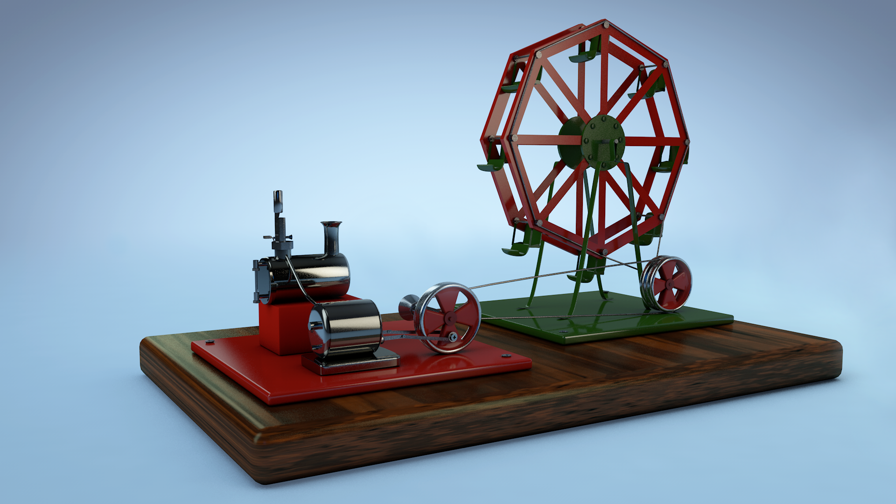
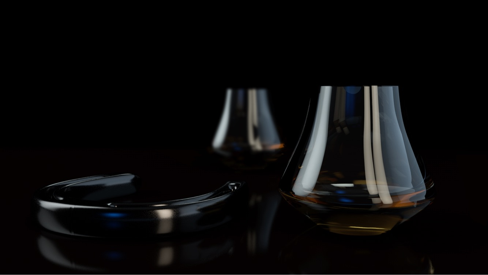
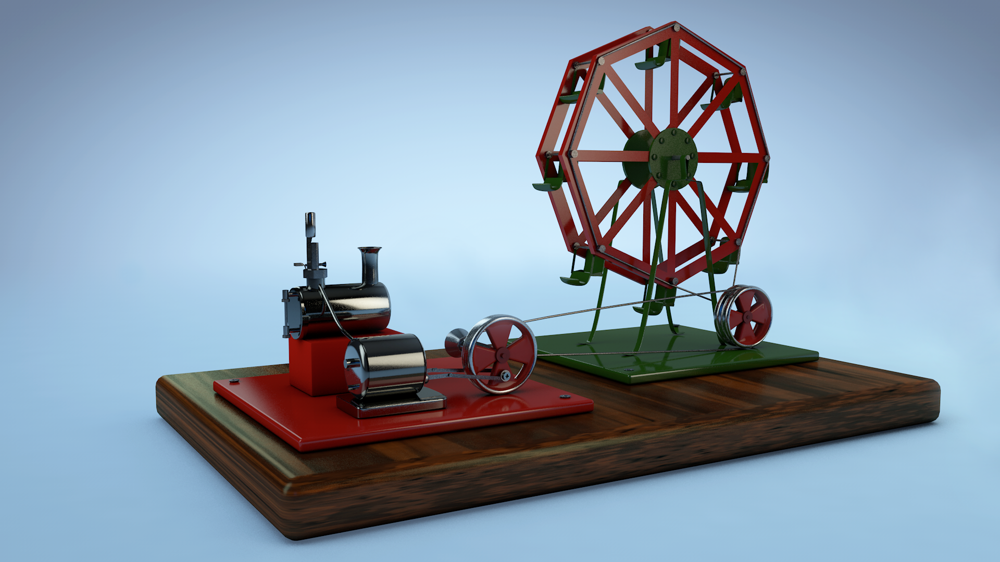
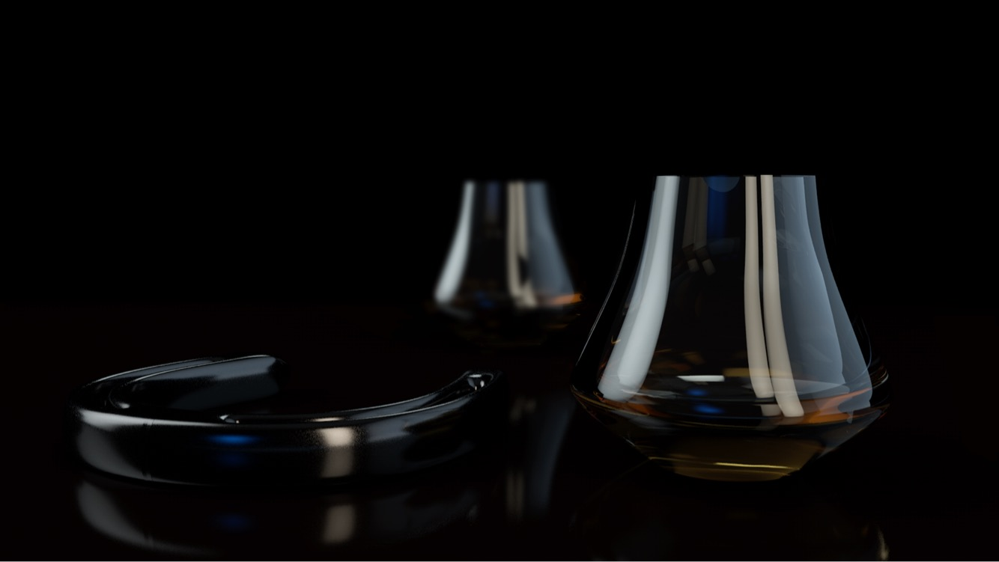

One of my favorite parts about being in New Media Design is the fact that we learn so many different skills. One of my favorite things to work on was this 3D Lego render. In order to accomplish this, I used Cinema 4D and edited it a bit on photoshop for small adjustments such as lighting and color values. This process took a very long time considering the legos were extremely difficult to model. The most difficult part would be the bottom where the 3 holes are. I had to account for the middle hole which is attached to a straight line that splits down the lego itself. Other than that, the plate was super easy.
One of my favorite parts about being in New Media Design is the fact that we learn so many different skills. One of my favorite things to work on was this 3D Lego render. In order to accomplish this, I used Cinema 4D and edited it a bit on photoshop for small adjustments such as lighting and color values. This process took a very long time considering the legos were extremely difficult to model. The most difficult part would be the bottom where the 3 holes are. I had to account for the middle hole which is attached to a straight line that splits down the lego itself. Other than that, the plate was super easy.
One of the most difficult projects I've ever had to make in 3D was this steam engine. In total, it took about 2 weeks of 3D modeling all day and night because my steam engine consisted of a bunch of organic shapes that I had to sculpt myself. The most difficult aspect to construct was definitely the ferris wheel. Not only was making the structure of the sides challenging, but modeling the seats of the ferris wheel took about 5 hours. This was all of course done using Cinema 4D which is the software I always use in order to 3D model. Texturing and lighting was also done within Cinema.
My Whiskey glass and horse shoe model has got to be my favorite render of all time. While it was extremely challenging modeling the liquid inside of the whiskey glasses, I was super happy with the lighting of the render. It gives it a more sleek and sophisticated feel to it that a lot of my other rends don't have. My intention for this model was to have the audience feel like they're looking at an extravagant product, so successfully portraying that kind of mood was very rewarding. I also really love the fact that there's a bit of a Bokeh effect going on in the glasses from the lights in the scene. It adds more character and makes it more visually interesting. As with my other models, this was also made in Cinema 4D"
3D Lego Render
Steam Engine
Whiskey Glasses